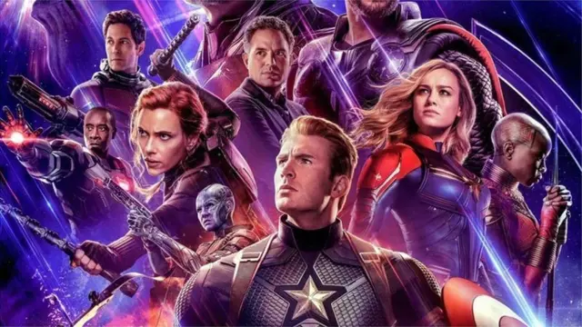

Aventura,ficção cientifica ,Ação
Em Vingadores: Ultimato, após Thanos eliminar metade das criaturas vivas em Vingadores: Guerra Infinita,
os heróis precisam lidar com a dor da perda de amigos e seus entes queridos. Com Tony Stark (Robert
Downey Jr.) vagando perdido no espaço sem água nem comida, o Capitão América/Steve Rogers (Chris Evans)
e a Viúva Negra/Natasha Romanov (Scarlett Johansson) precisam liderar a resistência contra o titã louco.